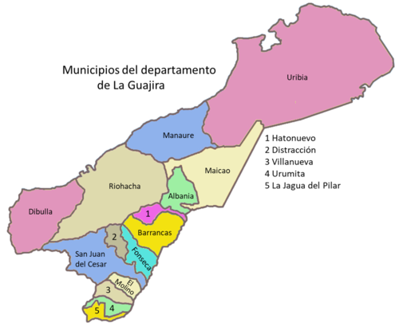

LA GUAJIRA

La Guajira es uno de los departamentos más fascinantes y diversos de Colombia, ubicado en el extremo noreste del país. Limita al norte con el mar Caribe, al este con Venezuela y al sur con los departamentos de Cesar y Magdalena. Su geografía, cultura y riqueza natural lo hacen un lugar único.
Geografía
La Guajira se caracteriza por su variada geografía, que incluye desiertos, montañas y una extensa costa. La zona desértica, conocida como el Desierto de La Guajira, es famosa por sus paisajes áridos y su clima cálido, mientras que la Sierra Nevada de Santa Marta se encuentra al sur del departamento. La región costera tiene hermosas playas como Punta Gallinas, que es el punto más septentrional de Colombia.
Historia
La Guajira tiene una rica historia que se remonta a las comunidades indígenas que habitaban la región, en particular los Wayúu, quienes son el grupo indígena más grande y reconocido de la zona. Con la llegada de los colonizadores españoles en el siglo XVI, se establecieron nuevos conflictos y cambios en la dinámica social y económica. A lo largo de los años, la Guajira ha sido un punto de encuentro de diversas culturas.
Cultura
La cultura guajira es un rico mosaico de tradiciones indígenas y mestizas. Los Wayúu son conocidos por su excepcional artesanía, que incluye mochilas tejidas a mano (llamadas "mochilas wayúu") y coloridos sombreros. La música también juega un papel central en la vida de la región, con ritmos como la música de gaitas y cantos tradicionales.
La gastronomía es otra expresión cultural significativa. Platos como el "camarón" y el "pescado frito" son populares en la región costera, mientras que el "pique" es una comida típica en las zonas más áridas.
Economía
La economía de La Guajira se basa principalmente en la minería, la agricultura y la pesca. La extracción de carbón es una de las principales actividades económicas, con la mina de El Cerrejón siendo una de las más grandes de América Latina. La agricultura se centra en cultivos como el maíz, el frijol y el yuca, aunque la aridez de la región plantea desafíos.
La Guajira es un destino turístico emergente, conocido por sus paisajes impresionantes y su diversidad cultural. Algunas de las atracciones más destacadas incluyen:
- Punta Gallinas:
- El punto más septentrional de Colombia, famoso por sus paisajes desérticos y playas vírgenes.
- Cabo de la Vela:
- Un lugar mágico conocido por sus atardeceres espectaculares y la cultura Wayúu.
- La Alta Guajira:
- Zonas menos exploradas donde se pueden encontrar comunidades indígenas y paisajes únicos.
- El desierto de La Guajira:
- Con su belleza austera y su flora y fauna únicas.
Desafíos
A pesar de su belleza y riqueza cultural, La Guajira enfrenta varios desafíos, incluidos problemas sociales y económicos. La pobreza es una realidad en muchas comunidades, y el acceso a servicios básicos como agua potable y educación puede ser limitado.
SI DESEA VOLVER A LA PAGINA PRINCIPAL, DE CLICK AQUI